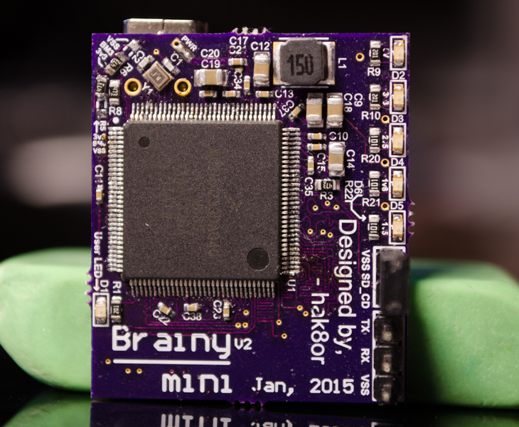

Freescale I.MX233 Embedded Linux System

Status
Currently not working due to issues with DRAM not seeming to be stable. Might have to mess with the timings a good bit more as well as lowering the clock from 133 Mhz to 100 Mhz.
A 22 uF capacitor under the SDHC holder is too tall, causing the SD card to not fully sit in the holder since it can't be closed, so a finger has to be used by pushing the sd card down when in operation.
NOTE Don't bother with the BCB (Boot Control Block) method of booting. It seems that as per the errta, it is bugged for large SD cards (2GB+). To enable booting via normal partitions on the SD card the board has to be booted into recovery mode and opened on the desktop through the bitburner/OTP burner program. Then burn the OTP bits to enable MBR based booting, if you don't burn them then the MCU will always look for a BCB instead of using the MBR.
Resources:
- Koliqi: amazing resource for start to finish for the mx233
- Jancc: somewhat outdated guide on the MX233 but still workable
- Karri: New guide on using the mx233, meh quality
Resources blob from OneTab
- imx233 bootlets and no battery board | Freescale Community
- First Linux board With kicad | LibreCalc
- i.MX233: information about SD/MMC boot from BCB | Freescale Community
- iMX233-OLinuXino - Linux on ARM - eewiki
- IMX233 - Olimex
- All Boards LTIB Config Ubuntu | Freescale Community
- U-Boot for the iMX233-OLinuXino — Christian's Blog
- A new SD card image for the iMX233-OLinuXino — Christian's Blog
- Index of /pub/archlinuxarm/os/
- FTDI PID Unbrick
- embedded - Why would copying a micro SD card using dd fail to produce a bootable card? - Reverse Engineering Stack Exchange
- SD-card with ArchLinux will not boot on Olimex iMX233-OLinuXino-MAXI
- g-lab – u-boot bootloader for imx23-olinuxino board
- Newbie question: can iMx233 Olinuxino-Micro boot from USB?
- dcfldd
- sasamy.narod.ru/IMX23_ROM_Error_Codes.pdf
- i.MX233 board USB not detected on win 7 | Freescale Community
- Booting custom I.MX233 board via BCB | Freescale Community
- iMX233-OLINUXINO SOFTWARE DEVELOPMENT PROGRESS | olimex
- Re: Re: Re: Re: i.MX233 Hand-Held Multimedia Board - Google Groups
- mx233 HTLLC - Google Search
- iMX233-OLinuXino - Linux on ARM - eewiki
- mx233 bcb signature - Google Search
- sasamy.narod.ru/IMX23_ROM_Error_Codes.pdf